Ujaval Gandhi
Ujaval GandhiInterpoliranje podataka o tačkama (QGIS3)¶
Interpolacija je često korišćena GIS tehnika za kreiranje kontinuirane površine od diskretnih tačaka. Mnogo fenomena iz stvarnog sveta je kontinuirano - nadmorske visine, zemljište, temperature itd. Ako bismo želeli da modeliramo ove površine za analizu, nemoguće je izvršiti merenja na celoj površini. Stoga se terenska merenja vrše na različitim tačkama duž površine, a međuvrednosti se dobijaju procesom koji se naziva „interpolacija“. U QGIS-u, interpolacija se postiže korišćenjem ugrađenih alata za interpolaciju iz kutije sa alatkama za obradu.
Pregled zadataka¶
Izmerićemo dubinu terena za jezero Arlington u Teksasu i na osnovu tih merenja kreirati mapu reljefa i kontura.
Druge veštine koje ćete naučiti¶
Kreiranje kontura iz tačkastih podataka.
Maskiranje vrednosti bez podataka iz rasterskog sloja.
Dodavanje oznaka vektorskom sloju.
Dobijte podatke¶
Odbor za razvoj voda Teksasa pruža „shapefile-ove za završena istraživanja jezera <https://www.twdb.texas.gov/surfacewater/surveys/completed/list/index.asp>`_.
Preuzmite shapefiles istraživanja iz 2007-12 za jezero Arlington.
Radi lakšeg snalaženja, možete direktno preuzeti primere podataka korišćene u ovom tutorijalu sa linka ispod.
Izvori podataka: [TWDB]
Procedura¶
Otvorite QGIS, u Browser pronađite i prevucite sloj
Arlington2007_SS_points_stpl83na platno.
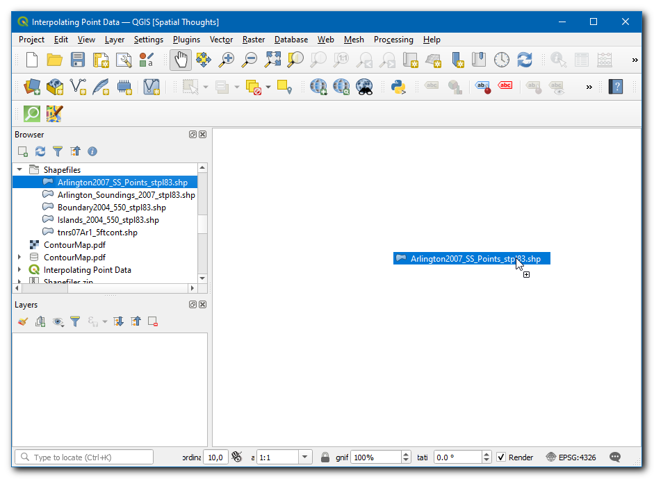
Pojaviće se dijalog prozor Izaberite transformaciju Arlington2007_SS_points_stpl83, ostavite izbor na podrazumevanoj vrednosti i kliknite U redu.

Sloj će biti dodat, sada pronađite i prevucite sloj „Boundary2004_550_stpl83.shp“ na platno.

Sloj će biti dodat na platno, sada isključite ovaj sloj da biste vizualizovali „Arlington2007_SS_points_stpl83“.

Kliknite na ikonu Uvećaj i izaberite malu oblast na ekranu. Kako zumirate, videćete tačke. Svaka tačka predstavlja očitavanje koje je snimio dubinometr na lokaciji koju je zabeležila DGPS oprema.
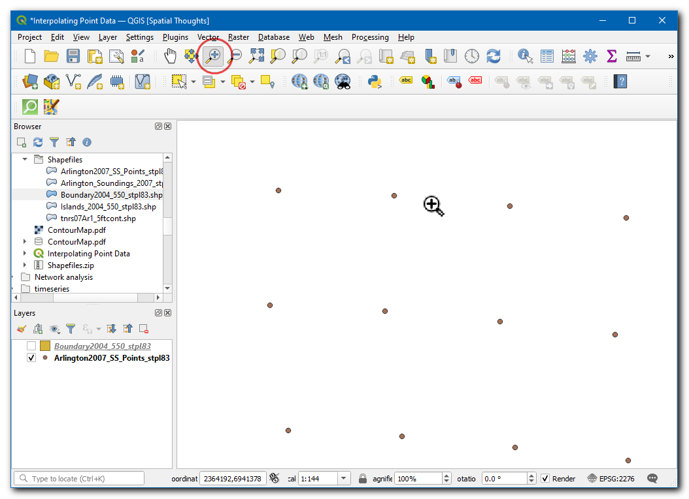
Izaberite alatku Identify i kliknite na tačku. Videćete panel Identify Results sa desne strane sa vrednošću atributa tačke. U ovom slučaju, atribut
ELEVATIONsadrži dubinu jezera na toj lokaciji. Pošto je naš zadatak da kreiramo profil dubine i konture elevacije, koristićemo ove vrednosti kao ulaz za interpolaciju.
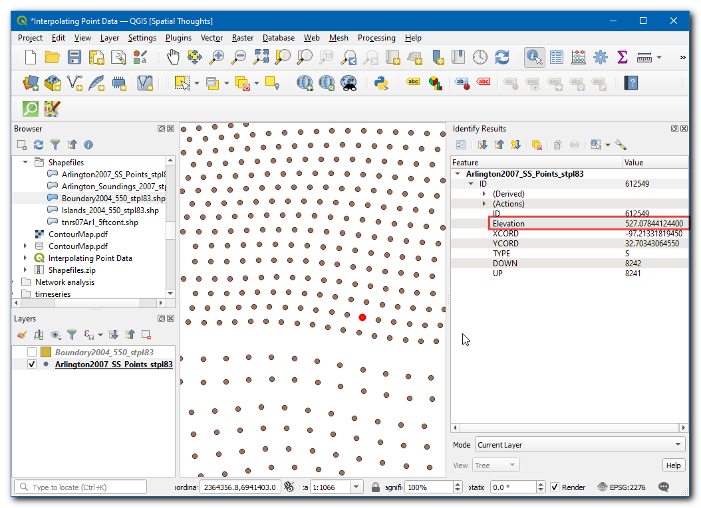
Iz Browser pronađite i prevucite sloj
Islands_2004_550_stpl83.shpna platno.
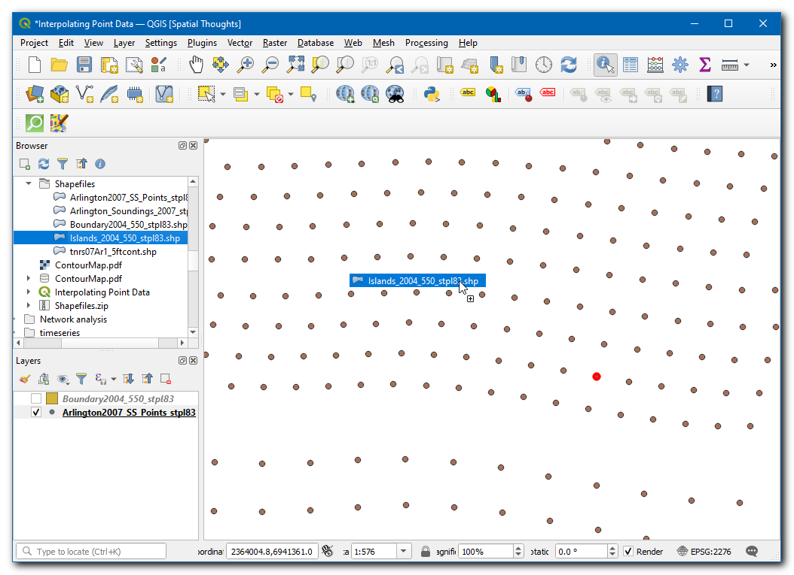
Sloj će biti dodat na platno, ovaj sloj sadrži informacije o ostrvima u regionu koja treba da imaju konstantnu elevaciju (ne treba ih interpolirati).
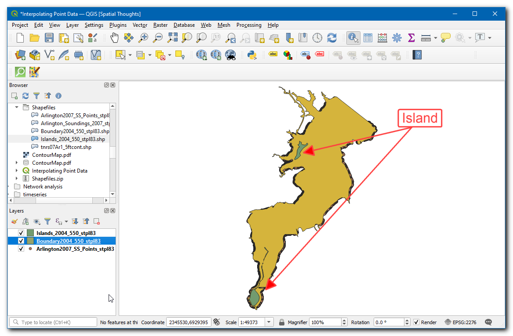
Iz Alatke za obradu, potražite i pronađite alatku . Dvaput kliknite da biste je pokrenuli.
Белешка
Rezultati interpolacije mogu značajno da variraju u zavisnosti od metode i parametara koje izaberete. QGIS interpolacija podržava metode Triangulisane nepravilne mreže (TIN) i Inverznog ponderisanja rastojanja (IDW) za interpolaciju. TIN metod se obično koristi za podatke o nadmorskoj visini, dok se IDW metod koristi za interpolaciju drugih vrsta podataka kao što su koncentracije minerala, populacije itd. Za više detalja pogledajte modul Prostorna analiza u QGIS dokumentaciji.

U dijaloškom okviru TIN interpolacija, izaberite
Arlington2007_SS_points_stpl83kao Vektorski sloj,Kotakao Atribut interpolacije. Zatim kliknite na ikonu Dodaj.
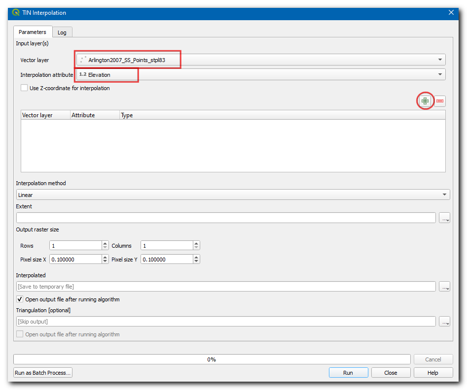
Sada, izaberite
Islands_2004_550_stpl83kao Vektorski sloj,Elevationkao Atribut interpolacije. Zatim kliknite na ikonu Dodaj. Sada promenite Tip sloja naLinije prekida.
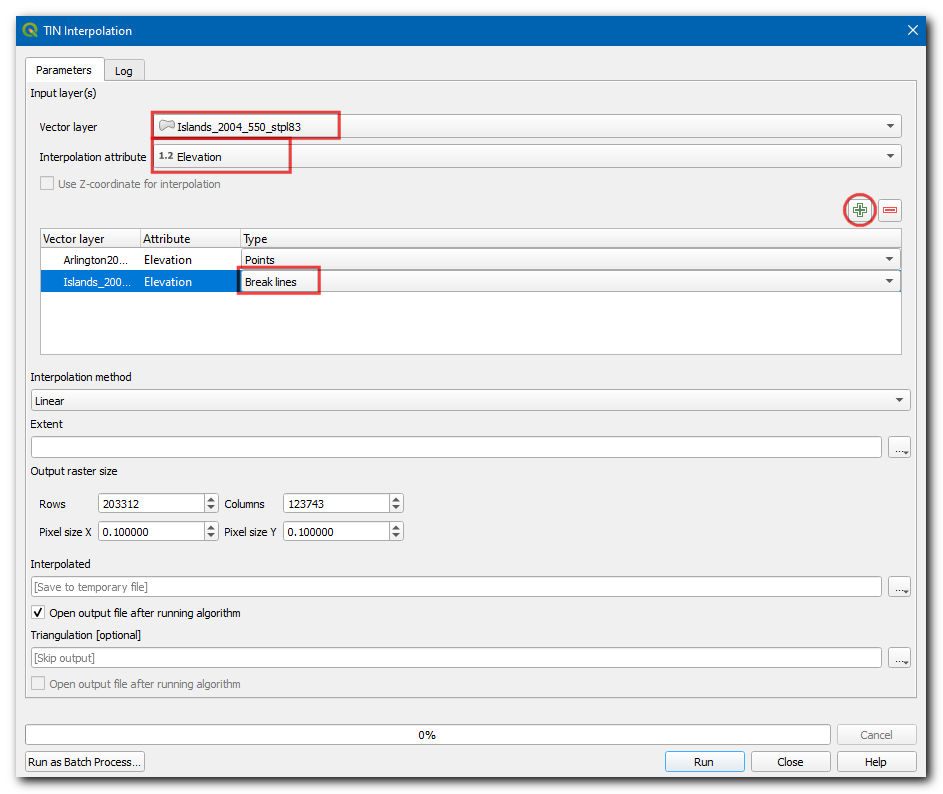
Белешка
Linija prekida nam omogućava da modeliramo iznenadne prekide u elevaciji prilikom modeliranja površinskih slojeva. Određivanje tipa sloja kao Linije prekida će reći algoritmu interpolacije da koristi konstantnu elevaciju za ostrva umesto interpoliranih vrednosti iz tačaka.
U Extent kliknite na
...i izaberiteBoundary2004_550_stpl83.
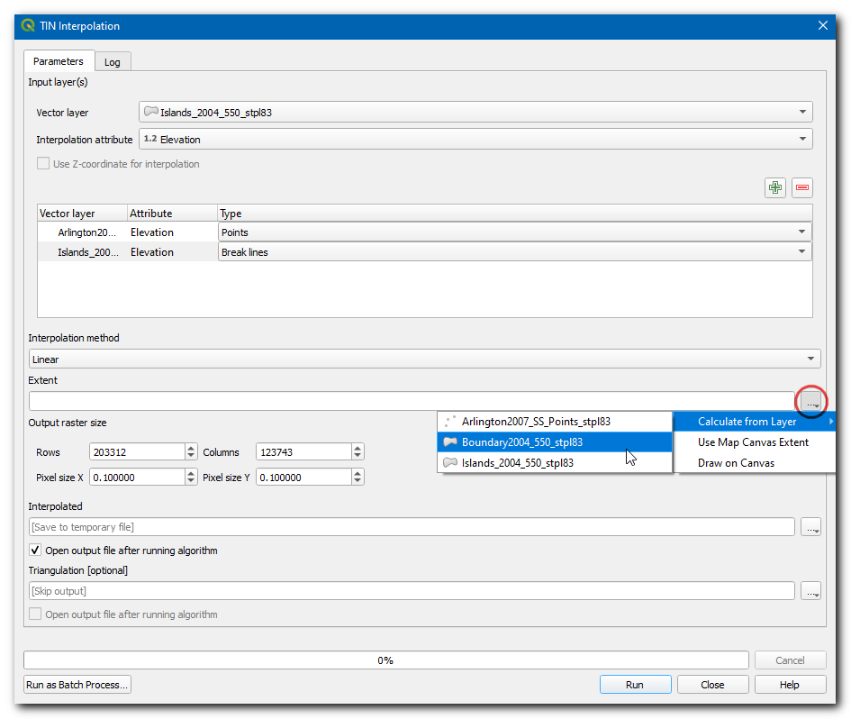
U Output Raster size, podesite Pixel size X i Pixel size Y na
5. Zatim kliknite na...ispod Interpolated da biste sačuvali sloj kaoelevation_tin.tif. Kliknite na Run.
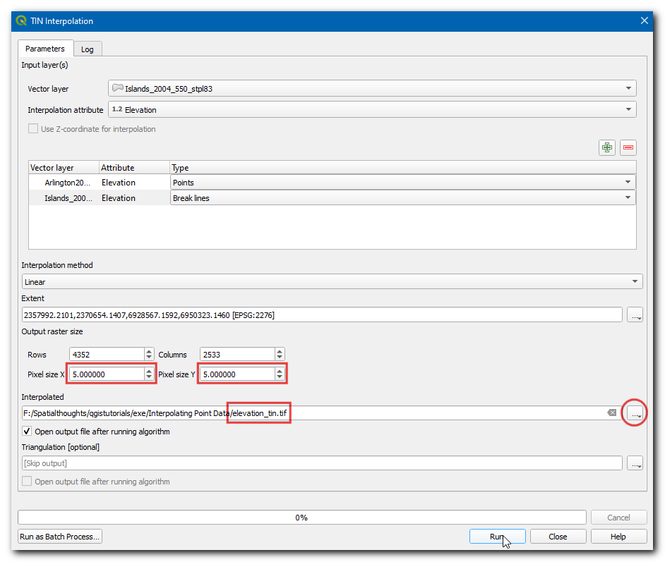
Sada će na platno biti dodat novi sloj „elevation_tin“.

Iz Alatke za obradu, potražite i pronađite alatku . Dvaput kliknite da biste je pokrenuli.
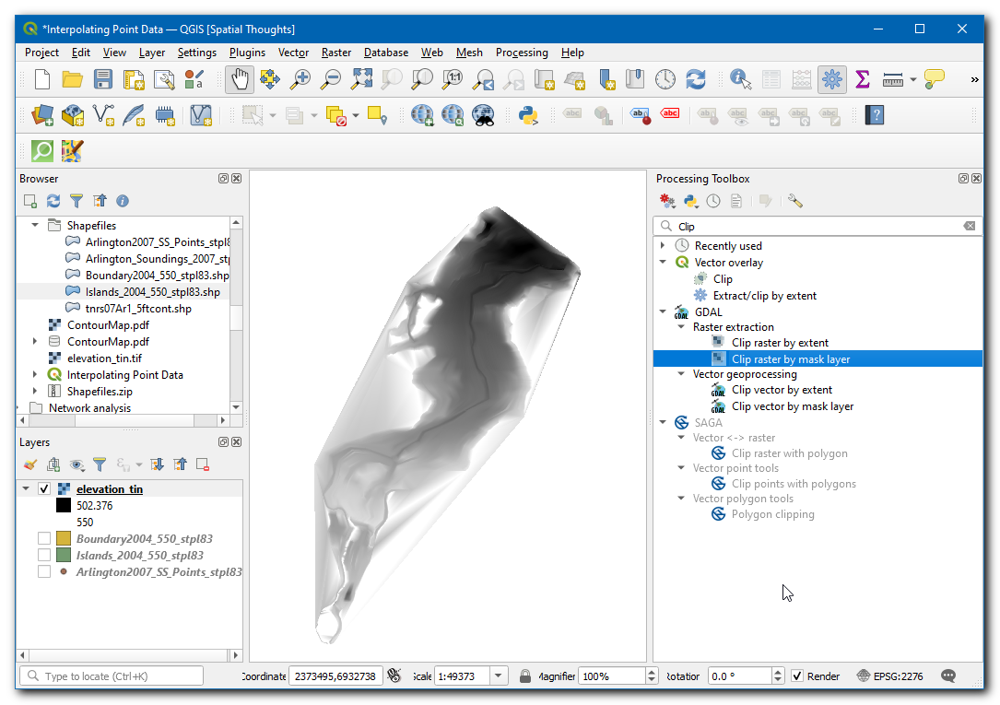
U dijaloškom okviru Clip raster by mask layer, izaberite
elevation_tinkao Input layer,Boundary2004_550_stpl83kao Mask layer. Zatim kliknite na...ispod Clipped (mask) da biste sačuvali sloj kaoelevation_tin_clipped.tif. Kliknite na Run.
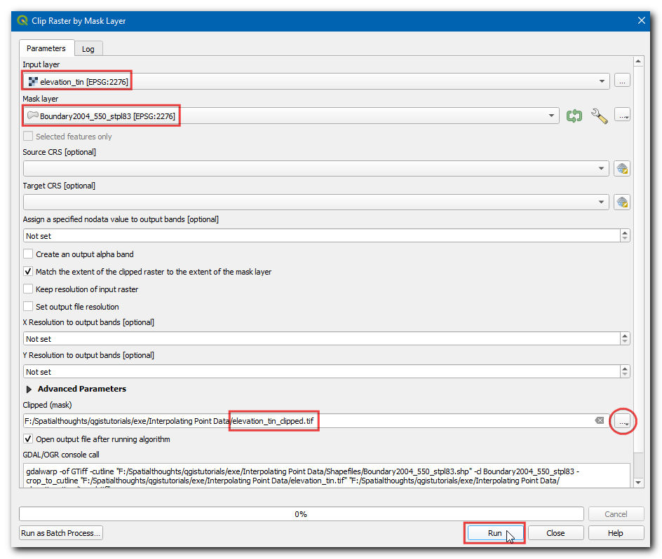
Sada će novi sloj
elevation_tin_clippedbiti dodat na platno. Kliknite na ikonu Otvori panel za stilizovanje slojeva.
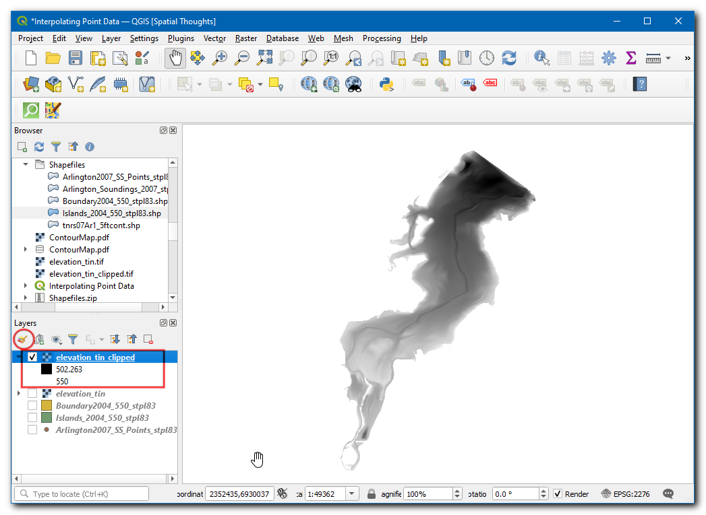
Postavite Simbologija na
Jednopojasna pseudoboja, kliknite na strelicu u Rampa boja i izaberiteInvertiraj rampu boja, unesite0u Preciznost oznake. Kliknite na Klasifikuj.
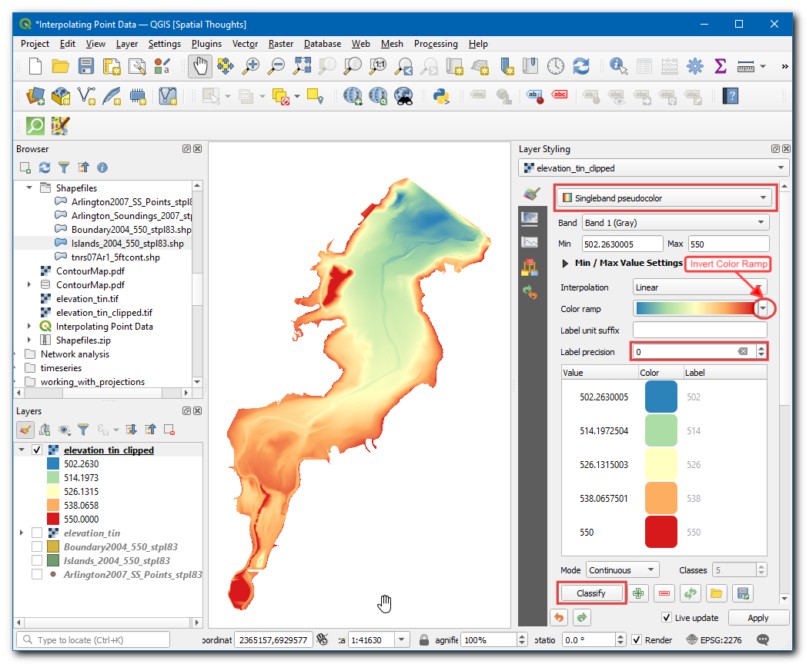
Iz Alatke za obradu, potražite i pronađite alatku . Dvaput kliknite da biste je pokrenuli.

U dijaloškom okviru Contour, izaberite
elevation_tin_clippedkao Input layer, unesite5.000u Interval between contours line. Zatim kliknite na...ispod Contours da biste sačuvali sloj kaocontour.gpkg. Kliknite na Run.

Белешка
Interval je naveden u jedinici CRS sloja. Naši izvorni podaci su u EPSG:2276 NAD83 / Texas North Central (ftUS) - tako da će interval za kuture biti interpretiran kao „5 stopa“.
Sada će novi sloj „kontura“ biti dodat na platno. Kliknite na ikonu Otvori panel za stilizovanje slojeva. Prebacite se na Oznake.
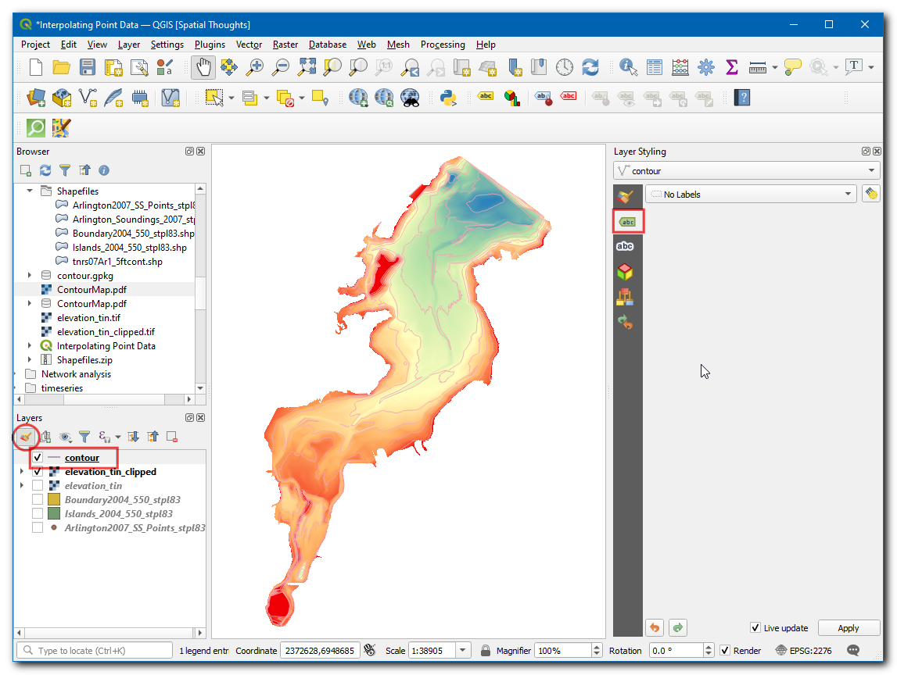
Izaberite
Jedna oznaka, u Vrednost izaberiteELEV.
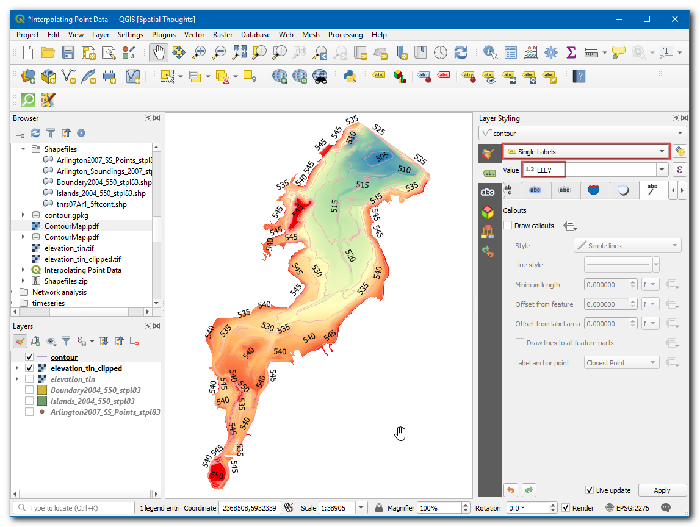
Sada pređite na Placement i promenite mu Mode na
Curved.
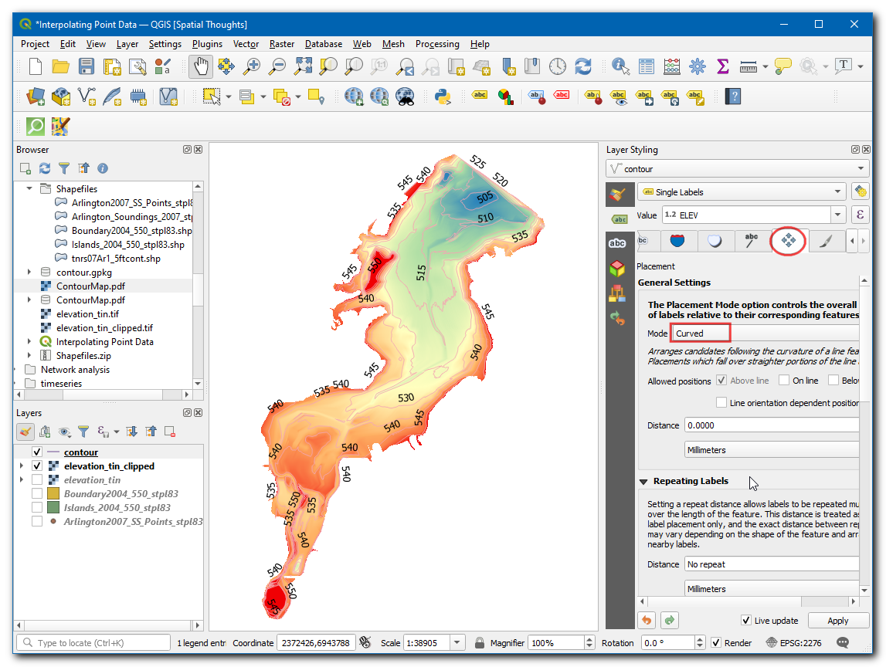
If you want to give feedback or share your experience with this tutorial, please comment below. (requires GitHub account)